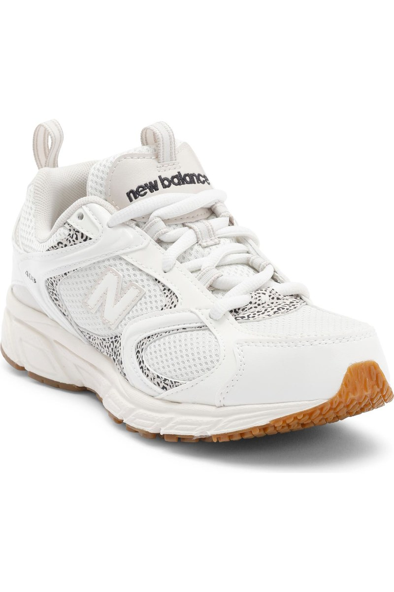
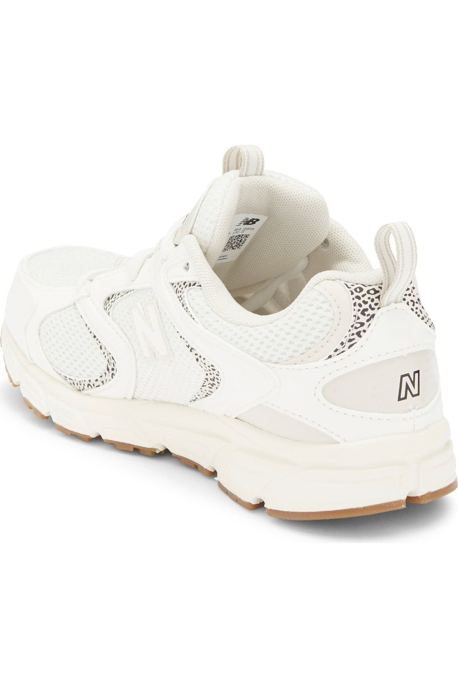
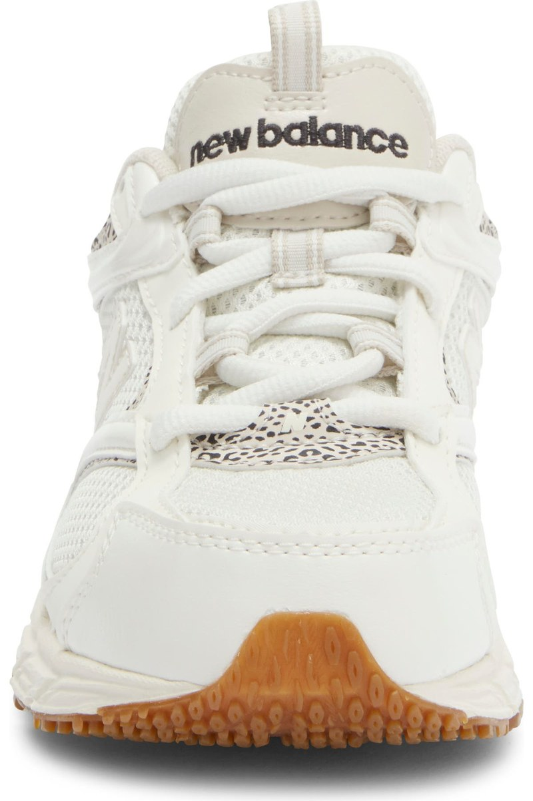

New Balance−40%
Кроссовки New Balance 408 (унисекс)
Sea Salt Gum — светло-бежевый с каучуковой подошвой
Кроссовки в стиле беговых моделей 2000-х: дышащие сетчатые панели, амортизация с поддержкой свода стопы и прочная нескользящая подошва. Шнуровка, съёмная стелька. Верх — текстиль и синтетика, подошва — резина. Женская сетка большемерит: рекомендуем на полразмера меньше; мужская — в размер.
$53.96$89.99
Размеры в наличии · 7
W 9.5 / M 8W 10 / M 8.5W 10.5 / M 9W 11 / M 9.5W 11.5 / M 10W 12.5 / M 11W 13.5 / M 12